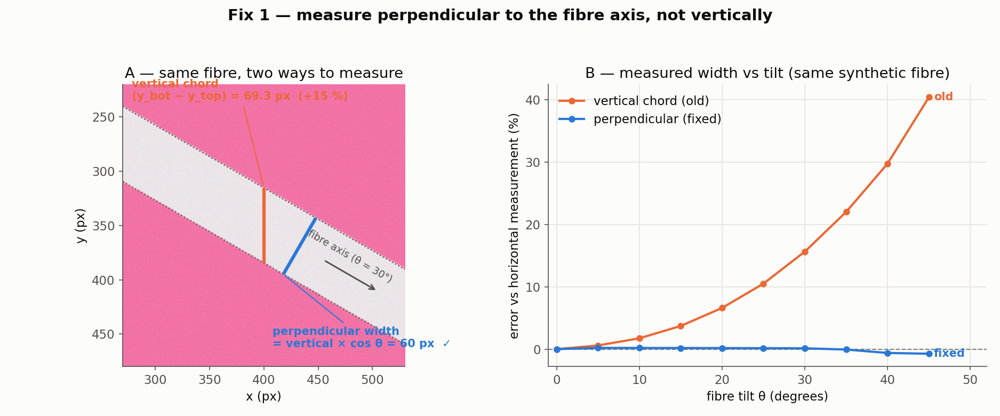
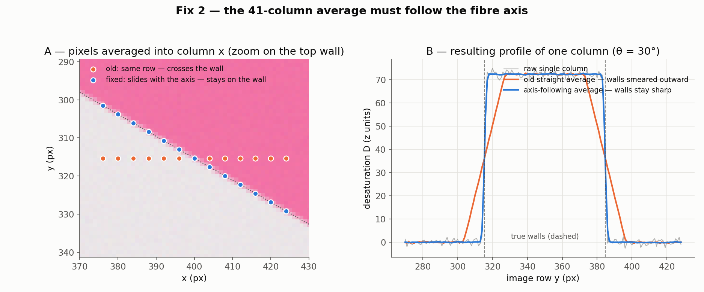

Measuring the diameter of a tilted fibre
The pipeline used to report y_bot − y_top — a vertical slice through the image. On an inclined fibre that number is wrong twice over. The fix reports the width perpendicular to the fibre axis and makes the edge detection itself tilt-invariant.
One measurement, two tilt errors
Edge detection scans the image column by column, finding the top and bottom wall of the fibre in each column. Two things go wrong once the fibre is inclined at an angle θ:
Chord direction. The vertical distance between the walls is a slanted chord, not the diameter — it is inflated by 1/cos θ (+15.5 % at 30°).
Cross-column smearing — found during investigation, and roughly twice as large. Before detecting walls, each column is averaged with its 41 neighbours to suppress iridescence. On a tilted fibre the wall row drifts 41·tan θ pixels across that window (23.7 px at 30° — a third of the fibre width), smearing the sharp wall into a long ramp; the level-crossing boundary then lands too far out on both sides. Together the two errors read a 60 px fibre as +37 % too wide at 30°.
Drag the tilt — watch the chord over-read
This is the synthetic test fibre from the pipeline's own test suite: a pale 60 px band on the saturated pink background. The vertical chord stretches with 1/cos θ; the perpendicular width is the same 60 px at every angle.
Report the chord × cos θ, not the chord
Scanning stays vertical and y_top/y_bot remain
sub-pixel image rows — overlays, manual-edit clicks and QC keep their
coordinate meaning. Only the reported value changes:
diameter = (y_bot − y_top) · cos θ,
the width perpendicular to the axis. θ comes from the slope of the robust
(Theil–Sen) centerline fit that the pipeline already computes.

The 41-column average must follow the axis
The neighbourhood average exists to suppress iridescence banding, and on a horizontal fibre averaging "the same row, 41 columns wide" is exactly right. On a tilted fibre that row cuts straight across the wall. The fix keeps the window 41 columns wide but slides each sample up or down so it tracks the axis — implemented as shear → horizontal box filter → unshear, three vectorised passes whose cost is independent of the window size, and an exact identity at zero tilt.

The full per-column recipe
-
Desaturation map features.py
Saturation — not brightness — separates fibre from background. Each pixel becomes a robust z-score of how desaturated it is versus the pink background: D ≈ 0 outside the fibre, large and positive inside it.
-
Band and tilt band.py
A coarse mask of D locates the band; a Theil–Sen fit through per-column band centres gives the centerline, the band half-thickness, and the slope m → θ. The slope is clamped to 60° so a pathological fit can never drive the compensations to extremes.
-
Axis-following column average edges.py · _axis_average
Fix 2: the 41-column iridescence-suppressing average follows the axis (shear → box filter → unshear) instead of cutting across the walls.
-
Smooth and differentiate in the perpendicular frame edges.py
Vertical Gaussian smoothing uses σ/cos θ and the vertical gradient is divided by cos θ, so the calibrated wall-slope gates see the same perpendicular-frame values at any tilt. The wall-local background zone (guard rows) is stretched by 1/cos θ for the same reason.
-
Find the outermost steep wall on each side edges.py · _find_wall
Scanning inward from the window extremes, the first run whose slope and total rise beat calibrated gates is the wall. Outermost beats internal reflections (they are further in); the slope + rise gates reject shadow and vignette ramps (they are too gentle). Short flat plateaus are bridged so a defocus-softened wall is not rejected piecewise.
-
Sub-pixel boundary on the wall itself edges.py · _side_edge
The background reference is the median of the guard pixels just outside the wall — an adjacent shadow plateau becomes the reference, so shadow is never counted as fibre. The boundary is the sub-pixel crossing of a level a fixed rise above that reference, searched on the wall run only.
-
Perpendicular diameter and QC edges.py → qc.py
Fix 1:
diameter = (y_bot − y_top) · cos θ. QC then flags bad columns, and its band-mismatch ratio is compared in the same perpendicular frame so the check stays calibrated on tilted fibres.
What keeps it safe
band.tilt_geometry) clamps |θ| to 60°, so
every 1/cos θ factor is bounded at 2× and edges, QC and manual edits can
never disagree on the geometry.